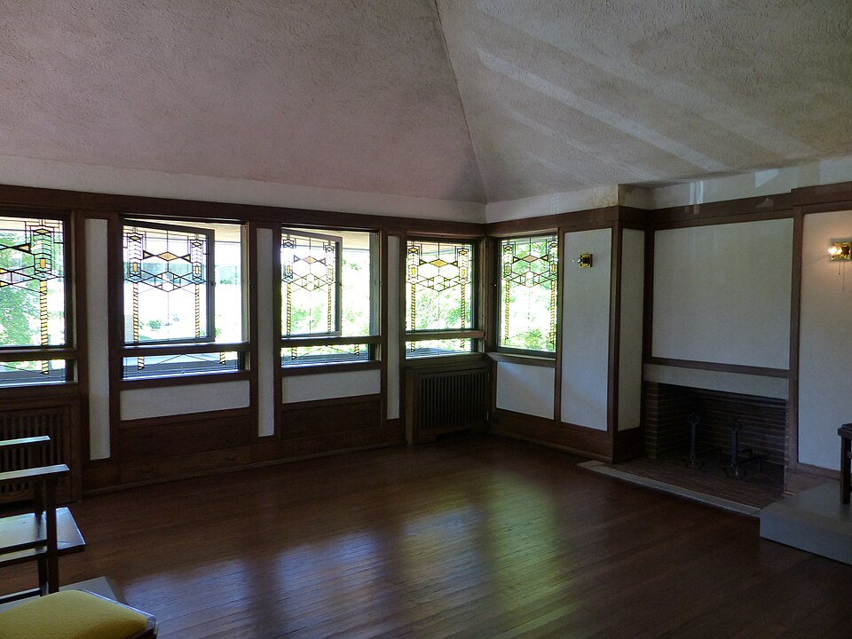
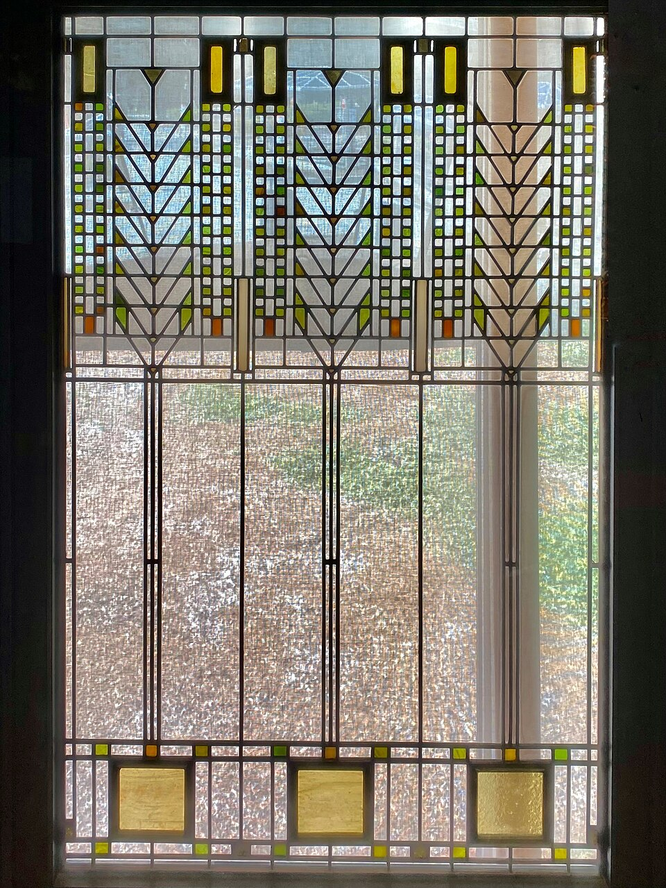
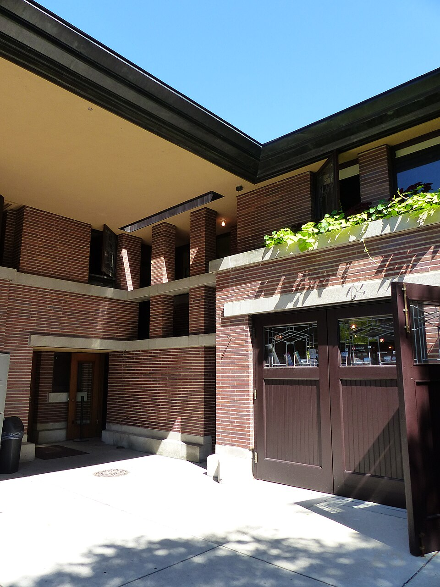
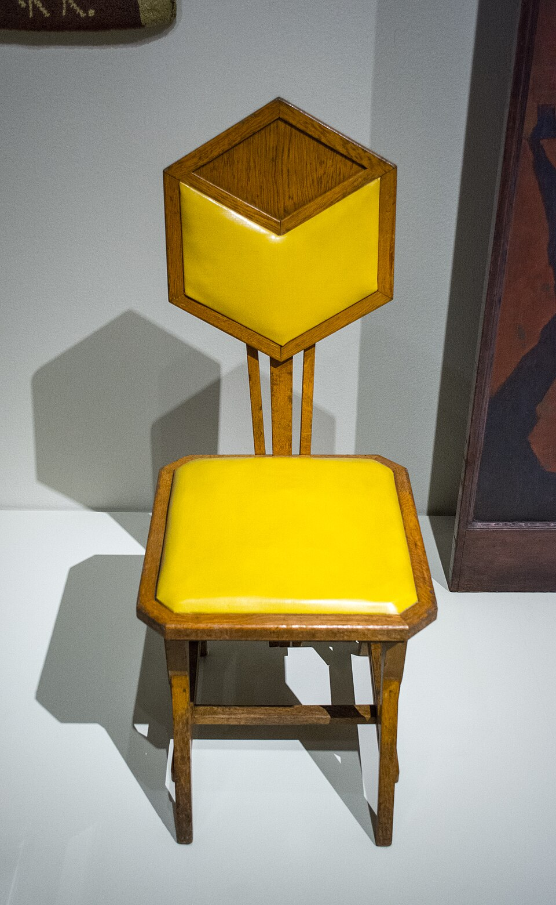
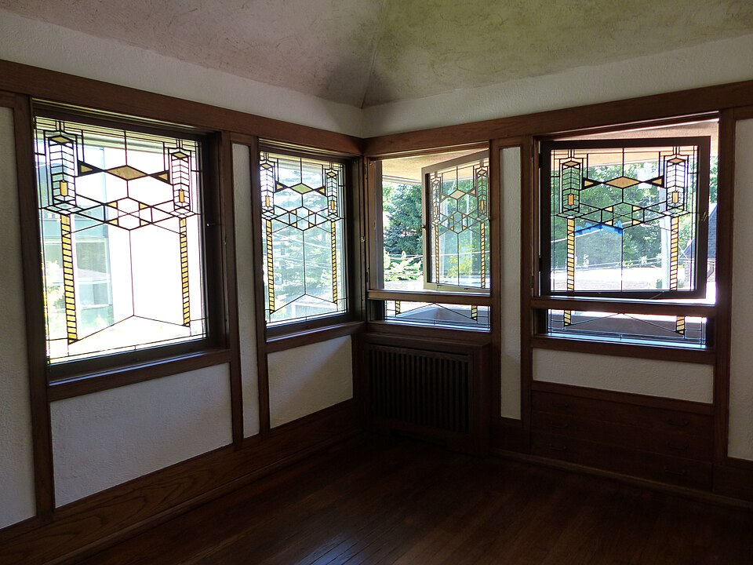
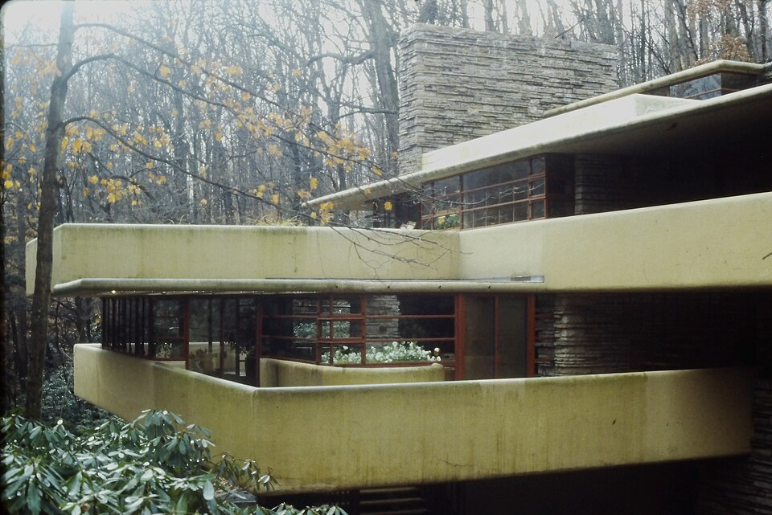
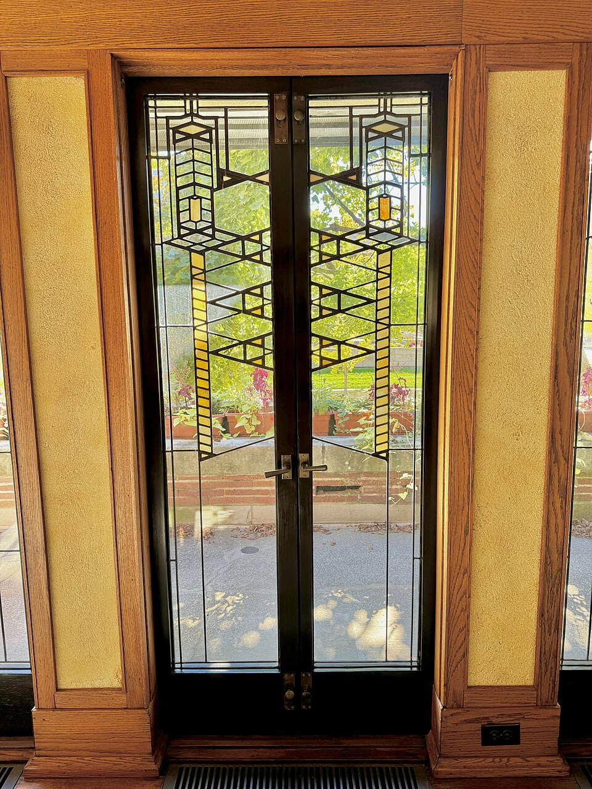
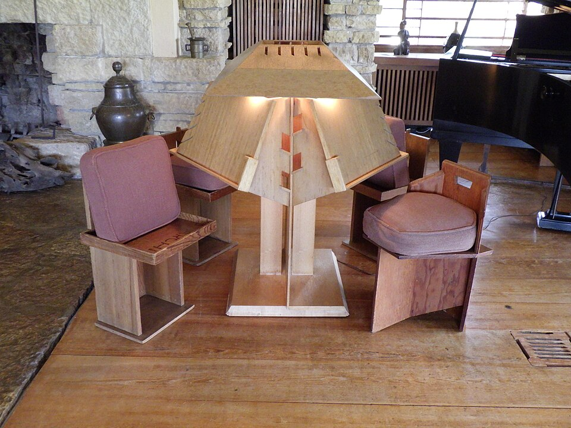
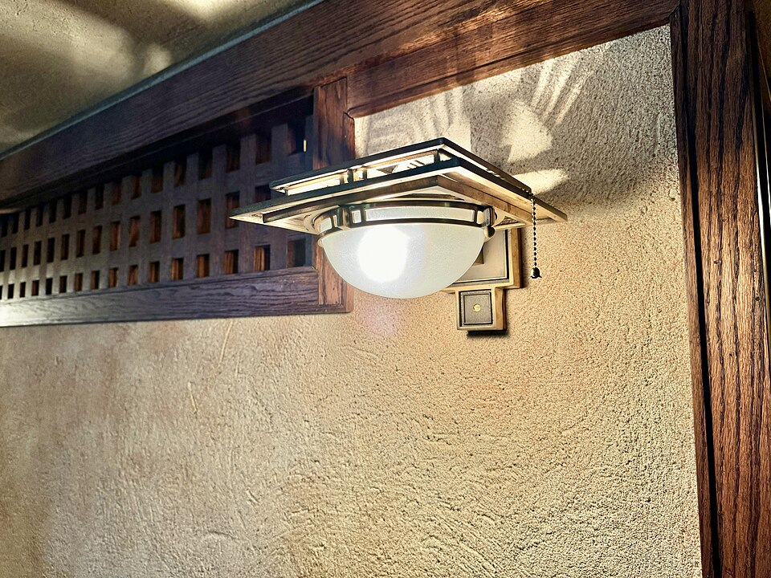
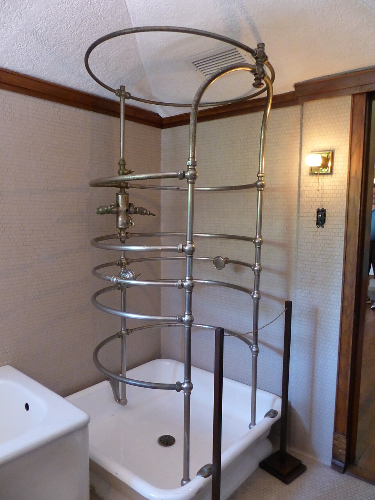

Robie House — Roman brick, limestone planters and leaded art glass Cherokee Red #9C3B25 · click to copy
Hallway window — geometric leaded glass in a stylized plant motif “Study nature, love nature, stay close to nature. It will never fail you.” — Frank Lloyd Wright Roman Brick #B5714C · click to copy
Long, low rooflines hugging the Chicago horizon Aa
Josefin Sans
Geometric sans, weight 300–600 · Google Fonts
A long, low line is the horizon at home.

Living room — a continuous band of windows under a low ceiling Limestone #D9CDB4 · click to copy

Tree of Life window, Darwin D. Martin House, Buffalo (Corning Museum of Glass) Art glass lattice · after the Robie windows Prairie Sage #8A8F5C · click to copy

Deep eaves and limestone-capped planters at the corner Robie House Where 5757 S. Woodlawn Ave., Hyde Park, Chicago When Designed 1908, completed 1910 Client Frederick C. Robie Status UNESCO World Heritage Site (2019); owned by the University of Chicago 
Peacock side chair, designed for the Imperial Hotel, Tokyo Oak Umber #4A3123 · click to copy

Dining room — art glass wraps the corner Aa
Libre Baskerville
Classic text serif, regular & italic · Google Fonts
Form and function should be one.

Fallingwater (1935–37), Mill Run, Pennsylvania — cantilevered terraces Art Glass Amber #D9A441 · click to copy
Roman brick · deep horizontal joints 
Living room doors — art glass framed in oak Copper Verdigris #5E8C7B · click to copy
“Form follows function — that has been misunderstood. Form and function should be one, joined in a spiritual union.” — Frank Lloyd Wright 
Taliesin living room — Wright’s home and studio in Spring Green, Wisconsin 
Wall sconce — lighting designed as part of the architecture 
Interior detail, Robie House